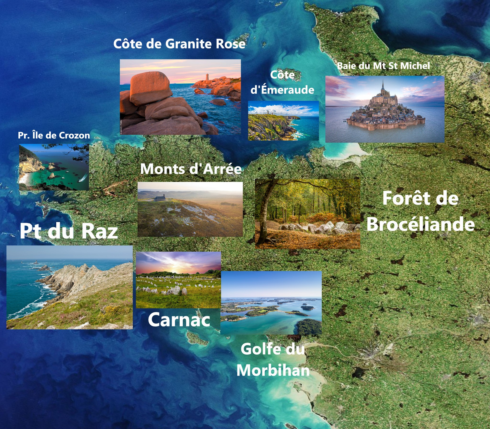
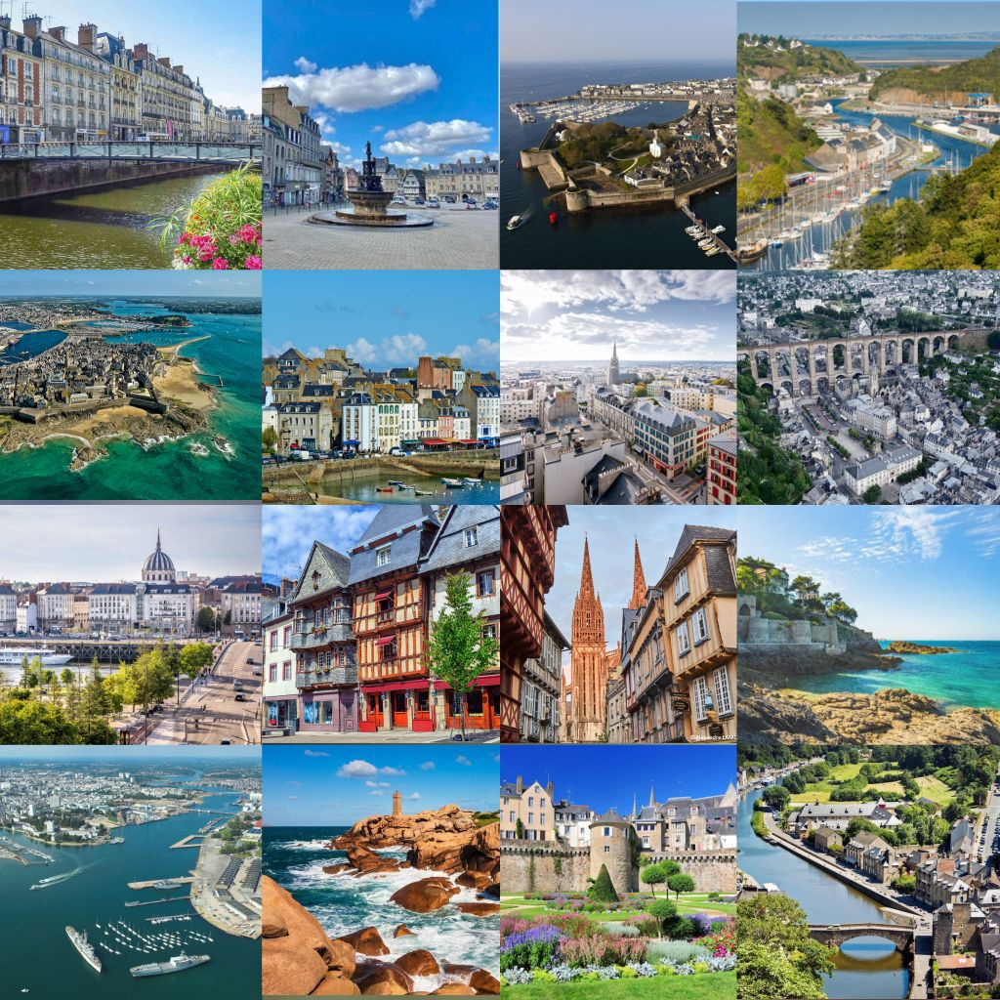
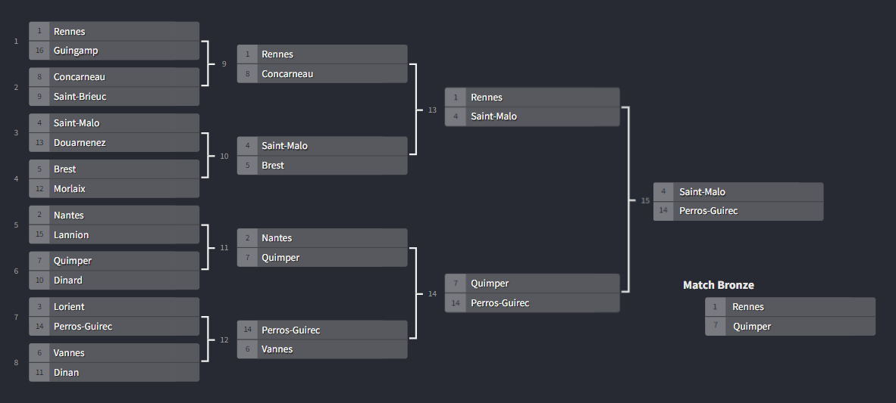
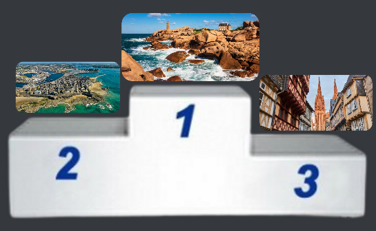
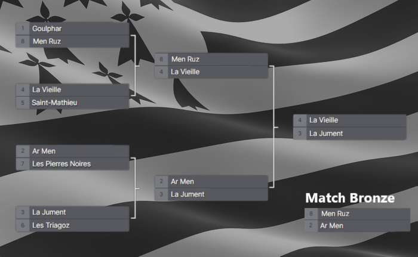
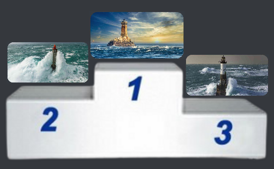
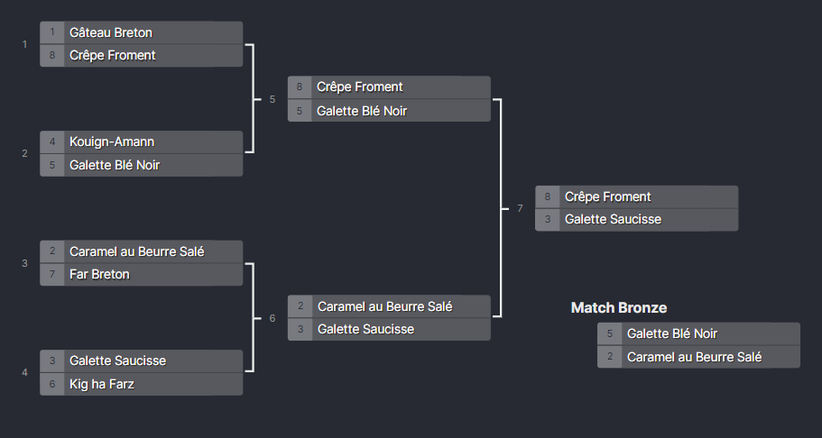
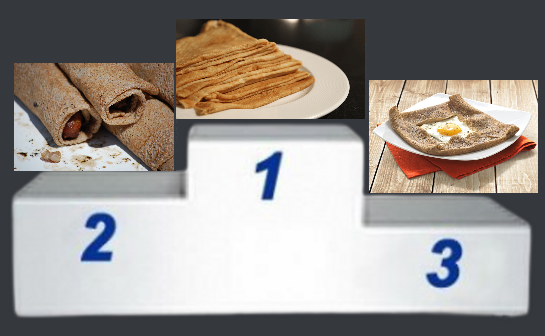
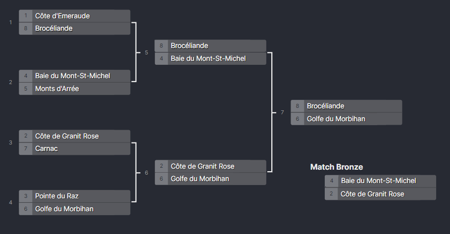
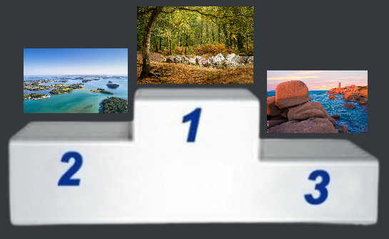

Bienvenue en Bretagne • Degemer mat e Breizh
Les Tournois de l'Empire Breton, disponibles sur le serveur discord dans le salon #🏟-tournois  , s'organisent généralement en 3 phases. Sur 8 participants de bases, sont organisés des Quarts, Demis et Finales. Les thèmes de ces tournois sont toujours autour de la Bretagne. Les membres peuvent donc voter pour leur préféré dans les couples proposés et peuvent changer leurs votes jusqu'à la fin de la phase. A la fin d'un tournoi, le podium réalisé à partir des résultats de la finale et de la finale des perdants est publié. Vous êtes tout à fait libres de suggérer un ou plusieurs tournois.
, s'organisent généralement en 3 phases. Sur 8 participants de bases, sont organisés des Quarts, Demis et Finales. Les thèmes de ces tournois sont toujours autour de la Bretagne. Les membres peuvent donc voter pour leur préféré dans les couples proposés et peuvent changer leurs votes jusqu'à la fin de la phase. A la fin d'un tournoi, le podium réalisé à partir des résultats de la finale et de la finale des perdants est publié. Vous êtes tout à fait libres de suggérer un ou plusieurs tournois.

Tournoi 1 - Villes de Bretagne
Le Tournoi des Villes de Bretagne est le premier tournoi organisé sur l'Empire Breton du 27 avril 2022 au 5 août 2022. Il se déroule sur un total de 16 villes. La ville gagnante sera Perros-Guirec, suivie en deuxième par Saint-Malo et en troisième sur le Podium par Quimper ayant gagné la finale des perdants contre Rennes.
|  |
 |
 |
Rennes • Guingamp • Concarneau • Saint-Brieuc
Saint-Malo • Douarnenez • Brest • Morlaix
Nantes • Lannion • Quimper • Dinard
Lorient • Perros-Guirec • Vannes • Dinan |
Phases du Tournoi des Villes de Bretagne |
Podium des Villes de Bretagne
🥇 : Perros-Guirec (Perroz-Gireg)
🥈 : Saint-Malo (Sant-Maloù)
🥉 : Quimper (Kemper) |
Tournoi 2 - Phares Bretons
Le Tournoi des Phares Bretons est le second tournoi organisé sur l'Empire Breton du 23 octobre 2022 au 3 novembre 2022. Il se déroule sur un total de 8 phares. Le plat gagnant sera le Phare de la Vieille, suivie en deuxième par le Phare de la Jument et en troisième sur le Podium par Ar Men ayant gagné la finale des perdants contre le Phare de Men-Ruz.
 |
 |
 |
Goulphar • Men-Ruz
La Vieille • Saint-Mathieu
Ar Men • Les Pierres Noires
La Jument • Les Triagoz |
Phases du Tournoi des Phares Bretons |
Podium des Phares Bretons
🥇 : Phare de la Vieille (Tour-tan ar Wrac'h)
🥈 : Phare de la Jument (Tour-tan ar Gazeg)
🥉 : Ar Men (Ar Men) |
Tournoi 3 - Plats Bretons
Le Tournoi des Plats Bretons est le troisème tournoi organisé sur l'Empire Breton du 4 février 2023 au 22 février 2023. Il se déroule sur un total de 8 plats. Le plat gagnant sera la Crêpe Froment, suivie en deuxième par la Galette Saucisse et en troisième sur le Podium par la Galette Blé Noir ayant gagné la finale des perdants contre le Caramel au Beurre Salé.
 |
 |
 |
Gâteau Breton • Crêpe Froment
Kouign-Amann • Galette Blé Noir
Caramel au Beurre Salé • Far Breton
Galette Saucisse • Kig ha Farz |
Phases du Tournoi des Plats Bretons |
Podium des Plats Bretons
🥇 : Crêpe Froment (Krampouezh)
🥈 : Galette Saucisse (Kaletez gant Silzig)
🥉 : Galette Blé Noir (Galetenn Ed Du) |
Tournoi 4 - Lieux Bretons
Le Tournoi des Lieux Bretons est le quatrième tournoi organisé sur l'Empire Breton du 8 avril 2023 au 27 avril 2023. Il se déroule sur un total de 8 lieux. Le lieu gagnant sera la Forêt de Brocéliande, suivie en deuxième par le Golfe du Morbihan et en troisième sur le Podium par la Côte de Granit Rose ayant gagné la finale des perdants contre la Baie du Mont-Saint-Michel.
 |
 |
 |
Côte de Granit Rose • Côte d'Émeraude • Baie du Mont-Saint-Michel
Monts d'Arrée • Forêt de Brocéliande
Pointe du Raz • Carnac • Golfe du Morbihan |
Phases du Tournoi des Lieux Bretons |
Podium des Lieux Bretons
🥇 : Forêt de Brocéliande (Koad Breselien)
🥈 : Golfe du Morbihan (Mor Bihan)
🥉 : Côte de Granit Rose (Aod ar Vein Ruz)
|